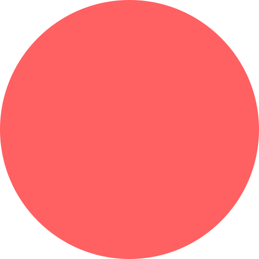

<div class="vhvw"
  style="position: absolute; align-items: center; display: flex; flex-direction: column; justify-content: center;">
  
  
</div>

<div class="main-row vhvw">
  <div class="main-column" style="width: 27.5vw; flex-direction: column-reverse;">
    
  </div>
  <div class="main-column" style="width: 60vw; justify-content: center; align-items: center;">
    <div class="title-text">
      Стикерпак
    </div>
    <div class="lead-text" style="text-align: center;">
      Один годный стикер заменяет пятьдесят
      сложносочиненных предложений.
      Качай и используй в рабочих чатах
    </div>
    <button tuiButton [disabled]="true" type="submit" class="tui-space_right-3 tui-space_bottom-3"
      appearance="secondary">
      <a routerLink="">
        Посмотреть стикеры!
      </a>
    </button>
  </div>
  <div class="main-column" style="width: 27.5vw; align-items: flex-end; justify-content: center;">
    
  </div>
</div>